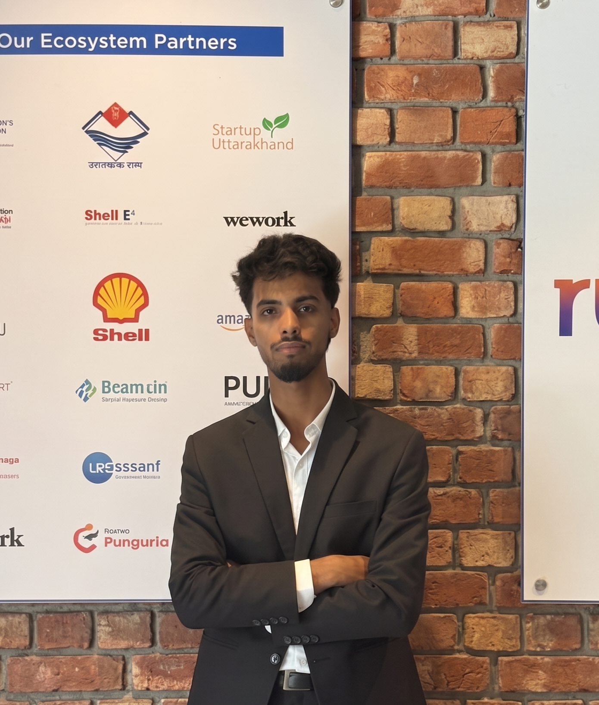

Mayank Singh Chouhan is the founding mind behind Vallo and a student entrepreneur driven by the mission of transforming local transportation across India.
As a student at UPES Dehradun, Mayank experienced firsthand the challenges of daily commuting. The lack of reliable, connected, and safe transportation systems in non-metro cities led him to ask a critical question: Why should advanced mobility technology be restricted to premium urban markets?
This question sparked the creation of Vallo. With a deep passion for problem-solving and a hands-on approach to both product design and technology development, Mayank is committed to building a smarter mobility ecosystem for the everyday Indian commuter.
Mayank's vision for Vallo extends beyond just a booking app. It's about creating a unified mobility platform that brings transparency, efficiency, and safety to local travel.
Building Vallo from the ground up required a multidisciplinary approach. Mayank actively bridges the gap between technical execution and strategic business goals.
"Transportation is not a luxury. It is a right — and it should work for everyone."